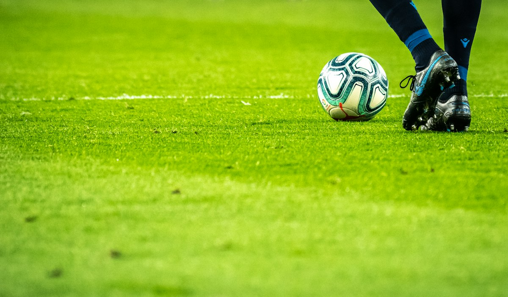

Mastering Close Control: A Beginner’s Guide to Football Dribbling
Category: football | Language: en
Dribbling is perhaps the most fundamental skill in football, serving as the bridge between receiving a pass and making a decisive play. For a beginner, the sensation of the ball at your feet can initially feel clumsy or unpredictable, but mastering close control is the key to building confidence on the pitch. This guide is designed for new players who want to move the ball effectively without losing possession. We will break down the mechanics of how to touch the ball, how to position your body for maximum agility, and provide specific drills that you can practice alone in a park or backyard to improve your coordination and speed.
The first step in effective dribbling is understanding which parts of your foot to use. While it is tempting for beginners to use their toes to poke the ball forward, this offers very little control and often sends the ball too far away. Instead, you should primarily use the 'outside' of your foot (near the pinky toe) for moving at speed and the 'inside' (the arch) for changing direction or shielding the ball. The 'laces' area is used when you need to push the ball into a large open space. By alternating between the inside and outside of your foot, you create a rhythmic movement that keeps the ball glued to your path rather than bouncing erratically away from you.
Body positioning is just as important as footwork when navigating the field. To maintain balance, you should keep your knees slightly bent and your weight distributed on the balls of your feet. This 'athletic stance' allows you to change direction instantly if a defender approaches. If you stand too upright or keep your legs stiff, you will find it difficult to react to the ball's movement. Your arms should be slightly out from your sides to help with balance and to act as a physical buffer between you and an opponent. A low center of gravity is the secret behind the world’s best dribblers, as it allows them to turn sharply without falling over.
One of the most common mistakes beginners make is taking touches that are too heavy, often referred to as 'kick and run.' To avoid this, you must practice the 'soft touch.' Imagine you are feathering the ball along the grass rather than kicking it. In a crowded area of the pitch, you should aim to touch the ball with every step you take. This high frequency of contact ensures that the ball is always within your reach, making it nearly impossible for a defender to poke it away. When you have more space, you can take slightly longer touches to increase your running speed, but you must always be able to reach the ball within one or two strides.
Developing 'field vision' is a major hurdle for new players who tend to stare exclusively at the ball. While you need to know where the ball is, keeping your head down prevents you from seeing open teammates or oncoming defenders. A practical way to fix this is the 'scan' technique: every time you take a touch, try to flick your eyes up for a split second to see the space in front of you. As you get more comfortable, you will rely on your peripheral vision to keep track of the ball at your feet while your main focus remains on the movement of the game around you. This prevents collisions and helps you make better decisions under pressure.
To build these skills, start with the 'Slalom Drill.' Set up five cones or markers in a straight line, spaced about one meter apart. Using only your dominant foot, weave through the cones using the outside of your foot to go around one side and the inside to go around the other. Once you reach the end, turn around and use your non-dominant foot. This drill forces you to make micro-adjustments and teaches your brain how to coordinate foot movement with forward momentum. Do not worry about speed at first; focus entirely on keeping the ball as close to the cones as possible without touching them.
Another excellent exercise is the 'Figure Eight' drill. Place two cones about two meters apart and dribble the ball in a figure-eight pattern around them. This requires you to use both the inside and outside of both feet to navigate tight turns. It simulates a real-game scenario where you might need to circle around a defender or change direction 180 degrees. As you progress, bring the cones closer together to make the turns even tighter. This drill is particularly effective for improving your 'weak' foot, which is essential because a one-footed player is much easier for a defender to predict and stop.
Safety and equipment are vital considerations before you begin intensive practice. Always ensure you are wearing appropriate footwear for the surface; use 'moulded' studs for firm grass or flat-soled trainers for indoor courts or concrete. Wearing the wrong shoes can lead to painful blisters or, worse, twisted ankles if your foot grips the ground too harshly during a turn. Additionally, always check your practice area for hidden hazards like sprinkler heads, large stones, or holes in the grass. Practicing on a flat, predictable surface allows you to focus entirely on your technique without the risk of an accidental injury caused by uneven terrain.
A realistic scenario you will face is a 1v1 encounter near the touchline. In this situation, use a 'feint' to unbalance the defender. Lean your shoulders to the left as if you are going to dribble that way, then quickly use the outside of your right foot to push the ball to the right and sprint past them. This works because defenders react to your body movement. If you can combine a convincing body lean with a quick, controlled touch into the open space, you can bypass opponents even if you aren't the fastest runner on the team. Remember, dribbling is as much about trickery and timing as it is about physical speed.
In conclusion, mastering dribbling requires a combination of delicate footwork, proper body mechanics, and consistent visual scanning. By moving away from 'toe-poking' and toward controlled touches with the inside and outside of your feet, you will find the game becomes much easier to navigate. Your next practical step is to find a flat area of grass and spend just 15 minutes a day performing the Slalom and Figure Eight drills. Consistency is more important than intensity; short, daily sessions will build the muscle memory you need to keep the ball under control during the heat of a real match.